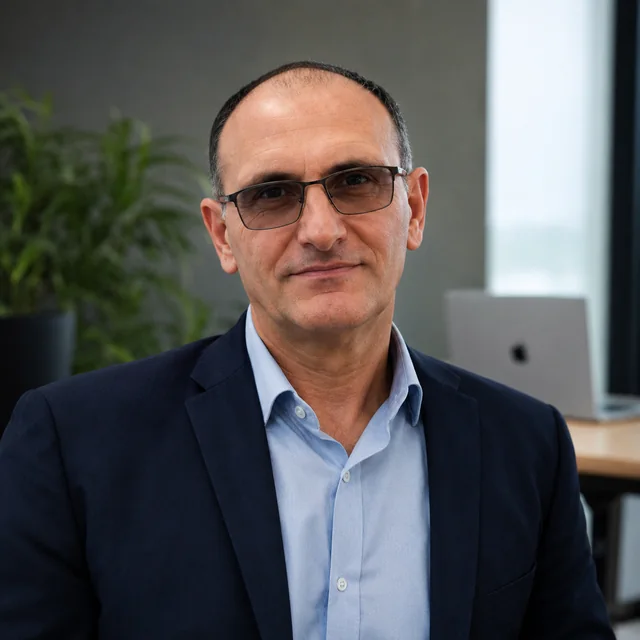

Présentation éditoriale
Recherche, sélection et synthèse des informations publiques concernant une entreprise, un lieu, une activité ou une initiative.
Michel Quinones
Communication éditoriale, valorisation d’initiatives et création numérique au service d’entreprises, de projets et de personnes.
Les présentations éditoriales indépendantes ne constituent pas des partenariats commerciaux sauf lorsqu’une collaboration est expressément indiquée.

Une démarche personnelle, indépendante et évolutive, nourrie par la recherche, la curiosité et l’expérience de terrain.
Ma démarche
Je développe des projets numériques, des publications, des sites web et des actions d’accompagnement. Sur les réseaux professionnels, notamment LinkedIn, je choisis également de présenter spontanément certaines entreprises, établissements, événements ou initiatives qui retiennent mon attention.
Je consulte leurs informations publiques, cherche à comprendre leur activité et construis ensuite une présentation claire, structurée et valorisante.
Je ne cherche pas seulement à partager un lien : je cherche à comprendre ce que je découvre et à donner envie d’en savoir davantage.
Communication & valorisation
Recherche, sélection et synthèse des informations publiques concernant une entreprise, un lieu, une activité ou une initiative.
Transformation de ces informations en publications structurées et adaptées à un réseau professionnel.
Mise en avant de l’identité, du savoir-faire et des services, dans le respect des informations officielles disponibles.
Pages web, supports visuels, présentations, vidéos et outils d’intelligence artificielle pour enrichir la communication.
Publications & découvertes
Lorsqu’une activité attire mon attention, je peux décider de lui consacrer une présentation à partir de ses informations publiques. Ces publications sont réalisées sans demande préalable lorsqu’aucune collaboration n’existe.
Hôtellerie · gastronomie · luxe · événementiel · innovation
Lieux · entreprises · savoir-faire · tourisme · création
Entrepreneuriat · technologie · recherche · initiatives remarquables
Créateurs · associations · initiatives locales · accompagnement
Réalisations
Mode · identité de marque
Présence numérique élégante dédiée à l’univers, aux créations et à l’identité d’une créatrice de mode.
Voir le projet →Commerce · catalogue
Vitrine numérique conçue pour présenter une activité commerciale, ses collections et ses services.
Voir le projet →Développement local
Contribution numérique et accompagnement bénévole autour d’un projet local évolutif.
Voir le projet →Réseau · solutions
Environnement numérique destiné à relier besoins, idées, compétences et initiatives.
Voir le projet →Engagement
Une partie importante de mon activité est réalisée bénévolement. J’accompagne des personnes qui rencontrent des difficultés avec le numérique, des créateurs qui souhaitent présenter leur activité et des projets associatifs ou solidaires.
Cette expérience humaine nourrit ma manière de communiquer : comprendre avant de proposer, écouter avant de créer et chercher des solutions adaptées.
Découvrir Le Numérique vient à Vous →Partenariats & soutien
Entreprises, marques, éditeurs de logiciels et organisations peuvent soutenir le développement de mes contenus et projets sous différentes formes.
Smartphone, caméra, ordinateur, microphone, éclairage ou accessoires permettant d’améliorer la qualité des productions.
Licences ou abonnements à des solutions de montage, design, IA, traduction ou création de contenus.
Contribution dédiée à une vidéo, une présentation, un déplacement ou une initiative précise.
Projet construit conjointement avec une entreprise ou une organisation dans un cadre défini.
Soutien financier ou matériel avec visibilité de la marque lorsque les conditions de collaboration le prévoient.
Prise de contact pour corriger, compléter ou approfondir une présentation existante.
Toute collaboration donnant lieu à une contrepartie est clairement identifiée. Une entreprise mentionnée dans une publication indépendante n’est jamais présentée comme partenaire ou sponsor sans accord réel.
Vous êtes une entreprise ou une marque ?
Il est possible que je l’aie simplement découverte et choisie spontanément pour son activité, son histoire, son concept ou son savoir-faire.
Vous pouvez me contacter pour apporter une information complémentaire ou envisager une collaboration future.
Me contacterTransparence éditoriale
Soutenir le développement
Un soutien libre peut contribuer au matériel, aux outils numériques, à la production de contenus ou au développement de nouvelles initiatives.
Le soutien PayPal présenté ici est libre et sans contrepartie. Pour un sponsoring, une collaboration ou toute contribution avec contrepartie, un échange préalable permet de définir clairement le cadre du projet.
Contact
Entreprise, marque, association, créateur ou porteur de projet : si ma démarche vous intéresse, je serai heureux d’échanger avec vous.